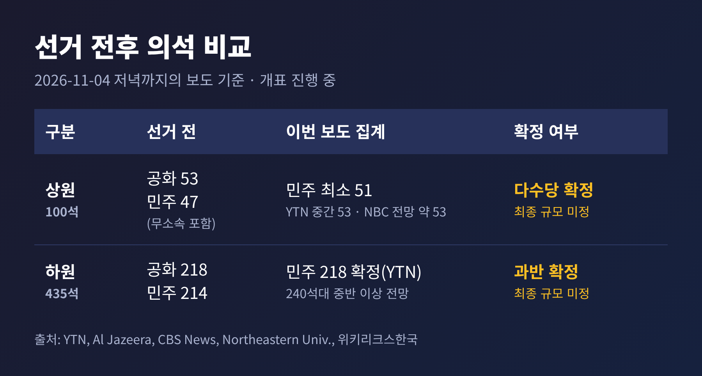
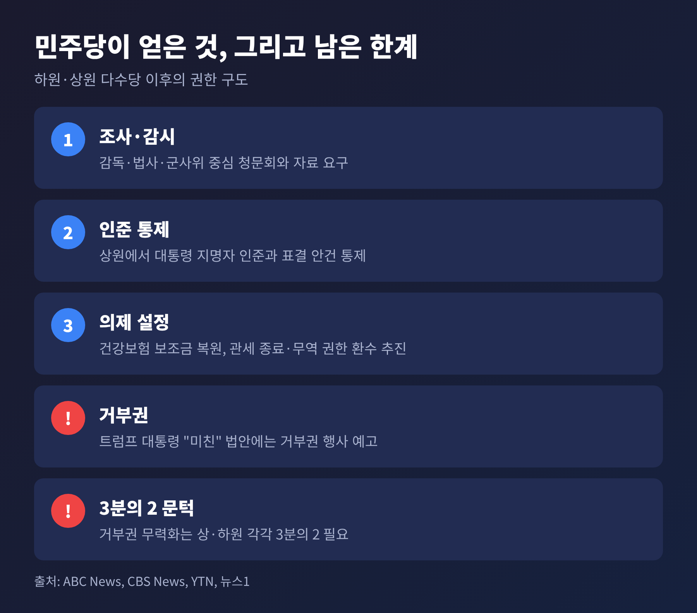
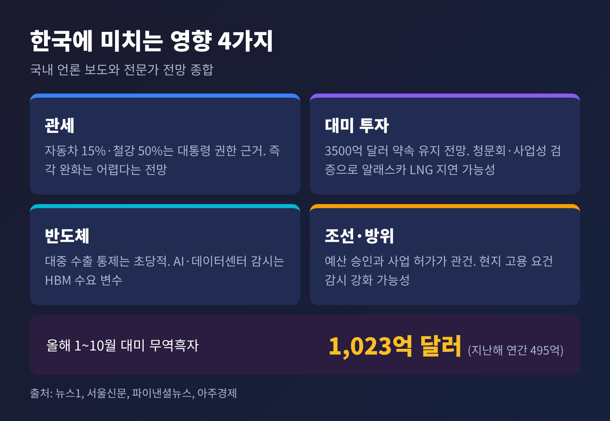
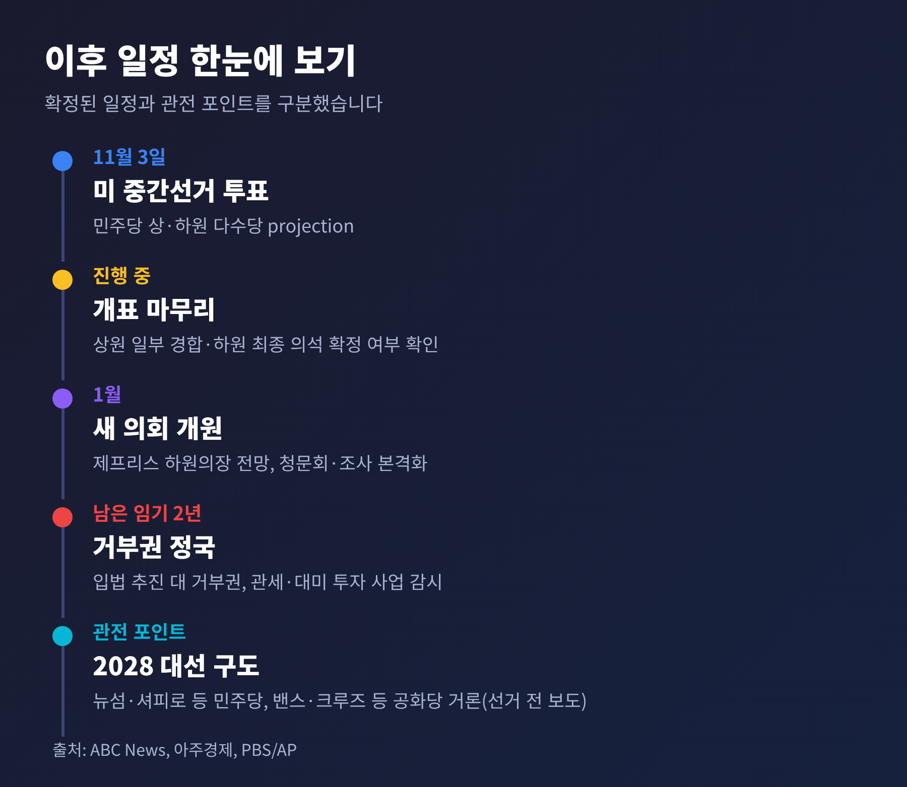

미국 중간선거 결과, 민주당 장악 후 트럼프 국정과 한국 통상 전망

오늘은 11월 3일 치러진 미국 중간선거 결과가 무엇을 뜻하는지 정리해 보려 합니다. 개표 현장을 따라가는 글이 아니라 '그래서 무엇이 달라지는가'에 초점을 맞췄습니다. 트럼프 행정부의 국정, 한국과의 관세·통상, 그리고 앞으로의 일정 순서로 살펴봅니다.
세 줄 요약
- 주요 언론은 민주당이 상원과 하원을 모두 가져간 것으로 전망했습니다. 다만 상원 일부와 하원 최종 규모는 아직 확정되지 않았습니다.
- 민주당은 조사·견제 수단을 얻었지만, 관세 권한과 거부권은 여전히 트럼프 대통령에게 있습니다.
- 한국에는 '관세 인하'보다 '대미 투자 사업에 대한 의회 감시'가 더 직접적인 변수가 될 수 있습니다.
■ 무슨 일이 있었나: 3관왕이 끝났습니다
YTN은 11월 4일 민주당이 미 중간선거에서 상·하원 과반 탈환을 확실시하고 있다고 전했습니다. Al Jazeera와 CBS 등 외신도 같은 흐름이었습니다. 2024년 공화당이 쥐었던 대통령·상원·하원 3관왕이 2년 만에 끝난 셈입니다.
상원부터 보겠습니다. 선거 전에는 공화당 53석, 민주당(무소속 포함) 47석이었습니다. 다수당이 되려면 민주당이 순증 4석을 얻어야 했습니다. Al Jazeera는 민주당이 최소 51석을 확보했다고 집계했습니다. YTN의 중간 집계는 민주 53석, 공화 41석이었고, 위키리크스한국이 전한 NBC 전망도 최종 약 53석입니다. 소스마다 수치가 조금씩 다른 이유는 개표가 끝나지 않았기 때문입니다.
눈에 띄는 것은 '붉은 주'의 이변입니다. 텍사스에서는 제임스 탈라리코가 켄 팩스턴 주 법무장관을 꺾었습니다. 캔자스에서는 목사 출신 애덤 해밀턴이 현역 의원을 이겼고, 1932년 이후 첫 민주당 상원의원이라고 합니다. 오하이오에서는 셰로드 브라운이, 노스캐롤라이나에서는 전 주지사 로이 쿠퍼가 의석을 가져왔습니다. 메인에서는 트로이 잭슨이 현역 수전 콜린스 의원을 이겼다고 CBS와 AP가 전했습니다.
하원은 전체 435석 중 과반인 218석이 기준입니다. 선거 전에는 공화 218석, 민주 214석이었습니다. YTN 중간 집계에서 민주당은 218석을 확정했고, 위키리크스한국은 주요 방송사들이 '240석대 중반 이상'을 전망한다고 전했습니다. 과반 확보는 분명하지만 최종 규모는 아직 열려 있습니다.
주지사 선거에서도 변화가 있었습니다. Reuters는 텍사스에서 민주당 지나 이노호사 후보가 3선 현역 그레그 애벗 주지사를 꺾었고, 오하이오와 아이오와에서도 민주당이 주지사직을 얻었다고 전했습니다. 다만 전체 주지사 선거의 최종 집계는 이번 취재에서 확인하지 못했습니다.

■ 왜 이런 결과가 나왔나: 생활비와 이란 전쟁
CBS와 Reuters, 현지 대학 분석은 공통된 요인을 짚었습니다. 지난 2월 시작된 이란 전쟁, 그에 따른 휘발유·경유 가격 상승, 그리고 생활비 부담입니다. Reuters가 인용한 SSRS 출구조사에서 유권자의 약 절반은 이번 선거를 '대통령에게 경고할 기회'로 봤고, 70%는 의회가 대통령을 더 견제하길 원한다고 답했습니다.
트럼프 대통령은 달리 해석했습니다. 선거 당일 SNS에 "나는 후보 명단에 없었다"며, 출마했다면 압도적으로 이겼을 것이라고 적었습니다. 폭스뉴스 인터뷰에서는 이란 문제가 패배에 일조했다고 인정하면서도, 사람들이 단기적인 기름값 상승을 감수하려 하지 않았다고 설명했습니다. AP는 대통령이 "유권자가 후보들을 좋아하지 않았다"고도 말했다고 전했습니다. 같은 결과를 두고 설명이 엇갈리는 것입니다.
해석에는 신중할 필요가 있습니다. 노스이스턴대 마사 존슨 교수는 이번 결과가 민주당 정책에 대한 뚜렷한 지지라기보다 공화당 측 후보 자질 문제도 작용한 것이라고 지적했습니다. 반면 코스타스 파나고풀로스 교수는 '전면적 거부'라고 평가했습니다. 두 시각 모두 일리가 있어 보입니다.
■ 트럼프 행정부 국정에 달라지는 것
민주당이 얻은 것은 크게 두 가지입니다. 하나는 감시와 조사, 다른 하나는 의제 통제입니다.
새 의회는 1월에 개원하고, 하킴 제프리스 원내대표가 하원의장이 될 전망이라고 ABC는 전했습니다. 하원에서는 감독위원회가 엡스타인 파일과 트럼프 일가 사업을, 법사위가 법무부·FBI 정치화 의혹을, 군사위가 이란 전쟁 결정과 국방예산을 들여다볼 것으로 보도됐습니다. 상원은 대통령 지명자 인준을 막고 본회의 표결 안건을 정할 수 있게 됩니다.
입법 의제로는 만료된 건강보험 보조금 복원, 메디케이드 삭감 되돌리기, 글로벌 관세 종료와 무역 권한의 의회 환수가 거론됩니다. 이란 전쟁 종료 추진도 포함됩니다.
탄핵은 어떨까요. 제프리스 대표는 "아무것도 배제하지도, 포함하지도 않았다"고 말했습니다. 래스킨 의원은 탄핵을 "헌법상 중요한 도구"라고 하면서도 시간과 관심이 많이 드는 일이라고 선을 그었습니다. 즉 지금 단계에서 탄핵 추진이 정해진 것은 아닙니다.
한계도 분명합니다. 트럼프 대통령은 민주당과 이민 등에서는 협력하겠지만 "미친" 법안에는 거부권을 쓰겠다고 밝혔습니다. 거부권을 뒤집으려면 상·하원 각각 3분의 2가 필요한데, 이는 높은 문턱입니다. 공화당 존 튠 상원 원내대표도 민주당이 성과를 되돌리려 하면 "가만히 있지 않겠다"고 했습니다. 한국무역협회 소속 조성대 전문가가 "남은 2년 동안 거부권 정치가 진행되지 않을까"라고 전망한 것도 같은 맥락입니다.

■ 한국에는 무엇이 달라질까
국내 보도의 공통된 결론은 '당장 관세가 내려가기는 어렵다'입니다. 한국산 자동차 15%, 철강 50% 관세는 대통령 권한에 근거하고 있습니다. 파이낸셜뉴스는 232조·301조 관세가 대체로 행정부 권한이어서 의회가 빠르게 철회하기 어렵다고 전했습니다. 한국은 미 무역대표부의 구조적 과잉생산 301조 조사 대상 16개 경제권에도 들어 있습니다.
배경에는 무역 불균형이 있습니다. 서울신문에 따르면 올해 1~10월 대미 무역흑자는 1023억 달러로, 지난해 연간 흑자 495억 달러의 두 배를 넘어 역대 최대입니다. 이 숫자는 추가 관세나 투자 요구의 명분이 될 수 있다는 지적이 나옵니다. 반대로 민주당은 관세의 물가 부작용을 알고 있어 추가 관세 요구는 크지 않을 것이라는 시각도 있습니다. 전망이 갈리는 대목입니다.
더 직접적인 변수는 대미 투자입니다. 한국이 약속한 3500억 달러 투자는 계속될 것으로 보이지만, 사업별로 달라질 수 있다고 뉴스1은 전했습니다. 서울신문·뉴스1·아주경제는 3500억 달러, 파이낸셜뉴스 본문은 2000억 달러로 적어 보도 간 차이가 있습니다. 민주당이 청문회와 사업성 검증을 요구하면 알래스카 LNG 같은 사업은 지연될 수 있다는 분석입니다. 산업통상부는 한미 관세 합의의 틀을 이행하며 미국과 협의하겠다는 입장입니다.
산업별로 보면 반도체는 대중국 수출 통제가 초당적이라 큰 변화가 없겠지만, AI·데이터센터 감시는 HBM 수요 시점에 변수가 될 수 있습니다. 전기차 지원이 되살아나면 현대차·기아와 배터리 업계에도 새 변수가 생깁니다. 조선과 방위는 예산 승인이 관건입니다.

■ 앞으로의 일정과 2028 대선 구도
가장 가까운 일정은 1월 새 의회 개원입니다. 그 전에 상원 일부 경합 지역과 하원 최종 의석이 어떻게 확정되는지 지켜봐야 합니다. 트럼프 대통령은 남은 임기 2년을 민주당 의회와 함께 보내게 되며, 전문가들은 선거 부담이 줄어든 만큼 강경한 통상 행보가 이어질 수 있다고 봅니다.

2028년 대선 구도는 선거 전 보도를 토대로 관전 포인트만 짚겠습니다. PBS와 AP는 민주당 쪽에서 개빈 뉴섬, 조시 셔피로, 앤디 비셔, JB 프리츠커, 알렉산드리아 오카시오코르테스, 피트 부티지지를, 공화당 쪽에서 JD 밴스와 테드 크루즈를 거론했습니다. 이번 결과가 이들에게 어떤 영향을 줄지는 아직 단정하기 이르며, 이 부분은 이번 취재에서 확인된 바가 없습니다. 미시간 상원 선거에서 승리한 것으로 DDHQ가 예측한 압둘 엘사예드를 두고는 민주당 내 좌파와 중도 노선 논쟁의 가늠자라는 분석이 있습니다.
정리하면 이렇습니다.
이번 선거는 '견제 장치가 다시 켜졌다'는 신호이지, 정책이 곧바로 바뀐다는 신호는 아닙니다. 민주당은 조사와 의제 설정 권한을 얻었고, 트럼프 대통령은 관세 권한과 거부권을 쥐고 있습니다. 두 힘이 부딪치는 2년이 시작되는 것입니다.
한국의 입장에서는 관세 수치보다 대미 투자 사업이 의회의 시선 아래 놓인다는 점을 지켜보시길 권합니다. 개표가 끝나고 의석이 확정되면, 그때의 숫자를 다시 확인해 보겠습니다.
※ 이 글은 2026년 11월 4일 저녁까지의 보도를 근거로 했으며, 의석수는 개표 진행에 따라 달라질 수 있습니다.